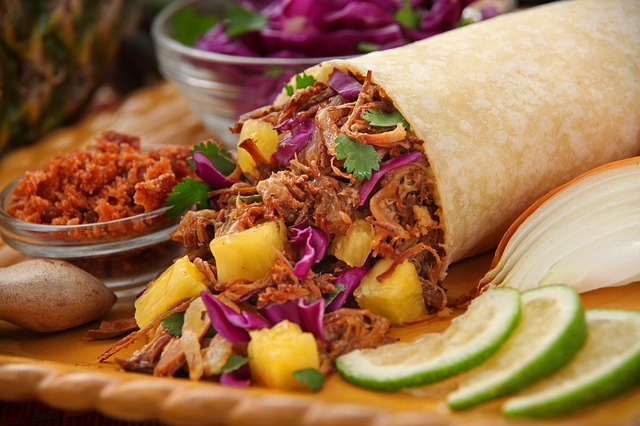

CHILES RELLENOS DE CARNE |
Ingredientes
- 4 chiles poblanos
- 225 g de carne molida de res
- 1 cebolla picada
- 1 diente de ajo picado
- Sal y pimienta al gusto
- 3 huevos, separados
- 1 taza de queso mozzarella rallado
- 2 jitomates saladet picados
- ½ taza de harina
- 1 taza de aceite de maíz
|
|
| Paso a paso |
- Pon los chiles sobre la flama o en un comal. Asa volteando frecuentemente, hasta que la piel se haya quemado y ampollado uniformemente. Retira del fuego, coloca en una bolsa de plástico y deja que suden durante unos minutos. Esto te permitirá pelarlos fácilmente.
- Mientras, coloca la carne en un sartén a fuego medio-alto. Revuelve de forma que se separe y deja que se cocine uniformemente. Cuando la carne se haya cocido, agrega la cebolla, ajo y tomate. Cocina durante unos minutos más. Sazona con sal y pimienta al gusto.
- Saca los chiles de la bolsa y pela. Te sugiero que te pongas guantes. Si lo deseas puedes enjuagarlos cuidadosamente con un chorro de agua fría para retirar cualquier trozo quemado. Haz un corte vertical en un lado de los chiles, cuidando que no se te rompan, retira las semillas y las venas. Ya que están limpios, rellena la mitad con la carne y la otra mitad con el queso. Sella la abertura con palillos de madera.
- Bate las claras de huevo en un recipiente de vidrio o de metal hasta lograr una consistencia espesa y esponjosa. Añade las yemas en forma envolvente hasta incorporar bien.
- Mientras, calienta un poco más de 1/2 cm de aceite en un sartén grande a fuego medio-alto. Pasa los chiles rellenos por el harina y luego sumérgelos en la mezcla de huevo hasta cubrir completamente. Coloca cuidadosamente en el aceite caliente y fríe ambos lados hasta que el huevo tome un color dorado. Escurre el el exceso de aceite en toallas de papel y sirve en un plato grande.
|
|
Inicio
|
TACOS |
Ingredientes
- Carne de res
- Carne de cerdo
- Carne de pollo
- Tortillas de maíz
- Tomate
- Cebolla
- Pimientos rojos y verdes
- Cilantro
- Chiles
- Guacamole
- Aceite de oliva virgen
- Sal
|
 |
| Paso a paso |
- La base de cualquier receta de tacos se puede decir que son las tortillas de harina o maíz mexicanas, las cuales se emplean para envolver el relleno de los mismos y comerlo todo a la vez. El relleno puede ser de lo más variado, empleando ingredientes muy diferentes para prepararl, aunque lo normal es que se preparen a partir de de una base de carne, ya sea de ternera o res, de cerdo o de pollo, aunque también los hay de pescado, que no son los más habituales, y otros que se emplean sin utilizara ningún tipo de carne.
- Una vez se tiene elegido el tipo de carne que se va a utilizar para hacer los tacos, que incluso puede ser una combinación de dos o más tipos, como por ejemplo una mezcla de cerdo y ternera o cerdo y pollo, se comienza pasando la misma por una sartén con un poco de aceite de oliva para dejarla bien cocinada. Una vez la tenemos bien hecha hay que cortarla en tiras o trozos, que es la forma más común de servir la carne en esta preparación, intentando que no sean trozos ni tiras demasiado grandes, para poder servirlos y comerlos cómodamente después.
- Con la carne ya preparada, se pasa a elaborar el resto del relleno con el que serviremos las tortas para formar los tacos, que puede prepararse de muchas formas, empleando diferentes mezclas de ingredienes. La mayoría suelen prepararse con una base hecha con cebolla, pimientos rojos y verdes y tomate, que se trocean en tiras o trozos, al igual que se hizo previamente con la carne, y luego se saltean para dejarlos bien doraditos y tiernos. Cuando las verduras ya están bien hechas, se le añade después todo tipo de condimentos para darles el toque de sabor característico de la cocina mexicana, como son el cilantro, el chile o el jalapeño, y también se puede emplear algún tipo de salsa para completar nuestro relleno y lo haga más apetitoso.
- Una vez que ya se tiene listo todo el relleno de los tacos, lo que intentaremos siempre servir en caliente, para lo que podemos hacerlo todo al mismo tiempo y servirlo recién hecho, pues pasamos a servir el relleno por un lado y las tortillas por otro, para que cada comensal se sirva al gusto. Otra opción es montar previamente los tacos, rellenando cada tortilla con el preparado anterior, y las servimos dobladas sobre sí mismas y acompañadas con alguna salsa, como un rico guacamole por ejemplo, y ya podemos disfrutar de estos ricos tacos caseros.
|
|
Inicio
|
CHILAQUILES |
Ingredientes
- 10 tortillas cortadas en tiritas, doradas en suficiente aceite (O una bolsa de totopos ya fritos)
- ½ litro de agua
- 3 jitomates
- 7 chiles serranos (o más si quieren que pique de verdad)
- ¼ de cebolla
- 3 dientes de ajo
- Caldo de pollo
- Sal y pimienta al gusto
- Queso manchego, crema y cebolla picadita para acompañar
|
|
| Paso a paso |
- Para la salsa: El chiste de unos buenos chilaquiles reside en el sazón de la salsa, así que aquí es donde se vale jugar con su imaginación. Hierve el agua y coloca los jitomates dentro durante 30 segundos, sólo para que se afloje la piel. Pélalos y luego regrésalos al agua y déjalos hervir junto con los chiles.
- Cuando estén blandos coloca todo en la licuadora y agrega la cebolla y los dientes de ajo. Licúa bien. A mí en lo personal me gustan las salsas más espesas, pero todo depende del gusto de quien cocina, así que puedes agregar o quitar agua según tu gusto.
- En un sartén caliente sofríe la salsa en un poco de aceite y sazona con sal, pimienta y caldo de pollo. Cuando la salsa esté hirviendo agrega los totopos. Para que los chilaquiles crujan debes retirar todo del fuego y servir rápidamente; si los prefieres blanditos déjalos remojando un poco más de tiempo en la salsa.
- Para servir coloca los chilaquiles y espolvorea un poco de queso encima. Si quieres que se derrita puedes meterlos unos 30 segundos al micro, luego coloca una cucharada de crema y un poco de cebolla picada encima.
|